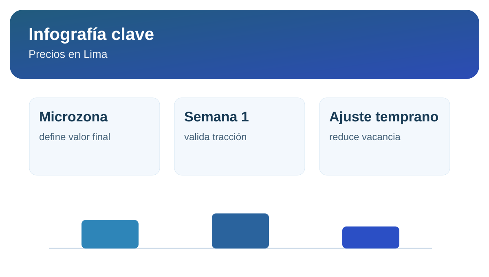

Precios de alquiler en Lima 2026: qué distritos lideran

Publicar un inmueble sin contexto de mercado es uno de los errores más costosos para un propietario. En Lima, la diferencia de ticket entre distritos y microzonas puede ser amplia, incluso en unidades con metraje similar.
Por eso, más que copiar avisos activos, conviene trabajar con referencias comparables y ajustar según velocidad real de consultas durante los primeros días.
Qué nos dice el mercado en 2026
Los distritos con ticket más alto siguen concentrando demanda premium, mientras que las zonas con ticket medio presentan mejor volumen de consultas y mayor liquidez comercial. Para propietarios, la decisión clave es equilibrar ingreso mensual esperado con velocidad de colocación.
Cómo usar estos datos para fijar precio
- Define rango objetivo en lugar de monto único.
- Compara por microzona y atributos equivalentes.
- Revisa respuesta del mercado en la primera semana.
- Ajusta temprano si no hay contactos calificados.
Infografía rápida: lectura de precios

Rango útilprecio objetivo + precio mínimo
1ra semanaclave para validar si el precio tracciona
Más cierrecuando precio y presentación se alinean
Fuentes consultadas
Aterriza tu estrategia con un cálculo de precio basado en comparables.
Calcular cuánto cobrar